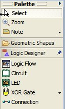
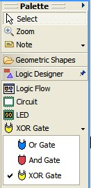
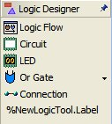

Tutorial: Configuring and Extending the Diagram Palette
|
Version: 0.1 |
Date: September 13, 2005 |
Contents
- Overview
- References
- Introduction
- Adding a Palette Provider Extension
- Creating and Registering the Palette Provider and Factory Classes
- Creating a Palette Drawer
- Creating a Palette Stack
- Creating a Palette Tool
- Adding a Palette Tool/Stack to an Existing Drawer or Stack
- Summary
Overview
The palette is a UI control that displays a set of tools to be used in conjunction with the active diagram editor. The tools may be used for selection, object creation or any other action to be performed on the active diagram. This tutorial provides the reader with a guide for configuration of palette drawers, tools and stacks.
References
This tutorial references the following extension point:org.eclipse.gmf.runtime.diagram.ui.paletteProviders
More information about this extension points can be found in the palette provider's schema documentation.
Introduction
In this tutorial, we will use the Logic Diagram Example to illustrate how to configure the palette diagram for a logic diagram. To gain familiarity with the Logic Diagram Example, refer to the RMP Diagram Layer Logic Example Guide.
Adding a Palette Provider Extension
Add an extension to register the palette drawer, stack and tools. The governing extension point for palette contribution is:org.eclipse.gmf.runtime.diagram.ui.paletteProviders
Please refer to the org.eclipse.gmf.runtime.diagram.ui.paletteProviders
extension point documentation for specific information on the tags and
attributes to use. The full extension XML can be found in
org.eclipse.gmf.examples.runtime.diagram.logic/plugin.xml.
<!-- Palette Provider -->
<extension
id="presentationPaletteProvider"
name="%ext.presentationPaletteProvider"
point="org.eclipse.gmf.runtime.diagram.ui.paletteProviders">
...
</extension>The contribution given above will result in the following Logic Designer palette drawer, stack and tools:
 
Creating and Registering the Palette Provider and Factory Classes
The palette provider class reads the XML palette contributions from the provider's extension point and contributes them to an editor's palette based on the contribution criteria.
The factory contribution is explained
below along with an excerpt from
LogicPaletteFactory.
<!-- Palette Provider -->
<extension
...
<paletteProvider class="org.eclipse.gmf.runtime.diagram.ui.providers.internal.DefaultPaletteProvider">
<Priority name="Low">
</Priority>
<editor id="LogicEditor">
</editor>
<contribution
factoryClass="org.eclipse.gmf.examples.runtime.diagram.logic.internal.providers.LogicPaletteFactory">
...
</extension>The contribution factoryClass defines the
factory class used to map the tools to a tool type (e.g. CreationTool).
You may want to define a new tool in order to add new functionality to your
tool.
public class LogicPaletteFactory extends PaletteFactory.Adapter { /** list of supported tool types. */ private Map toolMap = new HashMap();
{ toolMap.put( LogicConstants.TOOL_LED, new CreationTool(LogicSemanticType.LED) ); toolMap.put( LogicConstants.TOOL_CIRCUIT, new CreationTool(LogicSemanticType.CIRCUIT) ); toolMap.put( LogicConstants.TOOL_ORGATE, new CreationTool(LogicSemanticType.ORGATE) ); toolMap.put( LogicConstants.TOOL_ANDGATE, new CreationTool(LogicSemanticType.ANDGATE) ); toolMap.put( LogicConstants.TOOL_XORGATE, new CreationTool(LogicSemanticType.XORGATE) ); toolMap.put( LogicConstants.TOOL_FLOWCONTAINER, new CreationTool(LogicSemanticType.FLOWCONTAINER) ); } /** list of supported tool types. */ private Map connectorMap = new HashMap();
{
connectorMap.put( LogicConstants.TOOL_CONNECTION, new ConnectorCreationTool(LogicSemanticType.WIRE) );
}
/*
* Create the tool according to type
*/
public Tool createTool(String toolId) {
if (toolId.equals(LogicConstants.TOOL_CONNECTION)) {
return (ConnectorCreationTool)connectorMap.get(toolId);
} else {
return (CreationTool)toolMap.get(toolId);
}
}
}
Creating a Palette Drawer
A palette drawer is used to group a set of associated tools. The drawer can be open and closed by the application user.
The palette drawer can be added and removed by adding and removing the entry tag with kind set to drawer. The schema documentation specifies the rules for attributes. These attributes include the label, description, path, icon and id. The stack and tools that will reside under the drawer will need to include the drawer id in their respective paths. Note that removing a drawer requires removal of its stacks and tools.
The order of the drawers, stacks and tools depend on the associated priority
and position with respect to other entries in the same XML document.
<!-- Palette Provider -->
<extension
...
<entry
label="%LogicDrawer.Label" kind="drawer" description="%LogicDrawer.Description"
path="/" small_icon="icons/comp.gif" id="logicDrawer">
<expand>
<content>
<!-- expand by default for LogicEditors -->
</content>
</expand>
</entry>
...
</extension>
Creating a Palette Stack
A palette stack is used to group a set of closely related tools (e.g. gate types on a logic diagram).
The palette drawer can be added and removed by adding and removing the entry
tag with kind set to stack. The schema documentation specifies the rules for
attributes. These attributes include the label, description, path, icon and id.
The tools that will reside within the stack will need to include the stack id in
their respective paths. Note that removing a stack requires removal of the
stack's tools.
<!-- Palette Provider -->
<extension
...
<entry label="%GateStack.Label" kind="stack" description="%GateStack.Description" small_icon="icons/or24.gif" path="/logicDrawer/" id="noteStack">
</entry>
...
</extension>
Creating a Palette Tool
The palette tool can be added and removed by adding and removing the entry
tag with kind set to tool. The schema documentation specifies the rules for
attributes. These attributes include the label, description, path, icon and id.
<!-- Palette Provider -->
<extension
...
<entry label="%LogicFlowTool.Label" kind="tool" description="%LogicFlowTool.Description" large_icon="icons/logicflow24.gif" path="/logicDrawer/" small_icon="icons/logicflow16.gif" id="FlowContainer">
</entry>
...
</extension>
Adding a Palette Tool/Stack to an Existing Drawer or Stack
To add or remove an existing drawer or stack, the user must specify the path to the existing drawer or stack in the entry tag attributes. The palette service execution is based on a REVERSE strategy and therefore the new tool or stack must have a higher priority than that of the destination.
The following XML will contribute a new logic tool into the Logic Drawer set
up in the logic example. The palette factory class will need to set up the tool
internally as well. Note the priority is set to medium and that the contribution
is made by adding this excerpt to
org.eclipse.gmf.runtime.diagram.ui.geoshapes\plugin.xml file.
<!-- Palette Provider -->
<extension
id="presentationPaletteProvider"
name="%ext.presentationPaletteProvider"
point="org.eclipse.gmf.runtime.diagram.ui.paletteProviders">
<paletteProvider class="org.eclipse.gmf.runtime.diagram.ui.providers.internal.DefaultPaletteProvider">
<Priority name="Medium">
</Priority>
<editor id="LogicEditor">
</editor>
<contribution
factoryClass="org.eclipse.gmf.runtime.diagram.ui.geoshapes.internal.providers.GeoshapePaletteFactory">
<entry label="%NewLogicTool.Label" kind="tool" description="%NewLogicTool.Description" large_icon="icons/newlogic24.gif" path="/logicDrawer/" small_icon="icons/newlogic16.gif" id="NewTool">
</entry>
</contribution>
</paletteProvider>
</extension>The drawer now appears:

The label needs to be set in the appropriate plugin.properties file. It has been left uninterpolated for emphasis.
Summary
In this tutorial, we did the following:
- Added a Palette Provider Extension
- Created and Registed the Palette Provider and Factory Classes
- Created a Palette Drawer
- Created a Palette Stack
- Created a Palette Tool
- Added a Palette Tool to an Existing Drawer